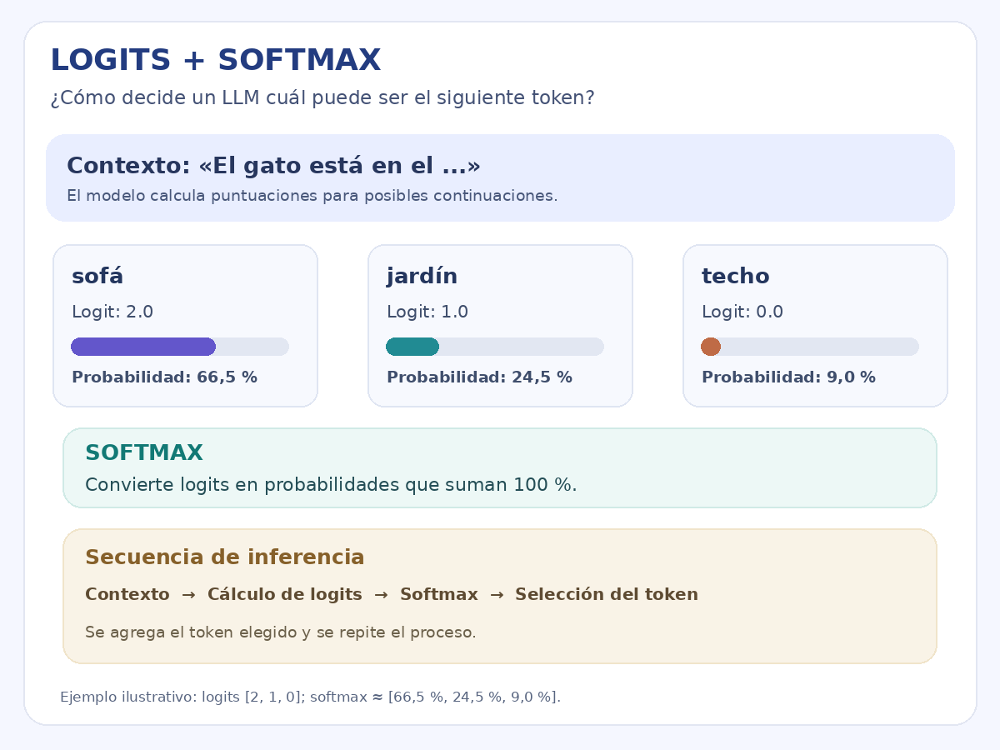

Logits y softmax
Antes de generar el siguiente token, el LLM asigna una puntuación a cada token posible. Esas puntuaciones son los logits. Después aplica softmax para convertirlas en probabilidades.
1. ¿Qué son los logits?
Son puntuaciones numéricas sin normalizar que produce el modelo para cada token candidato. Indican qué continuación favorece el modelo, pero aún no son probabilidades.
Un logit puede ser positivo, cero o negativo. Cuanto mayor sea en comparación con los demás, mayor será la probabilidad que recibirá después de softmax.
2. ¿Qué es softmax?
Es una función matemática que toma todos los logits y los transforma en probabilidades entre 0 y 1 cuya suma es 1 (100 %).
Así podemos interpretar qué tan probable resulta cada token según el modelo. Softmax no selecciona por sí sola el token; la selección ocurre en un paso posterior.
3. Ejemplo: «El gato está en el …»
Supongamos que el modelo considera únicamente tres posibles continuaciones:
| Token candidato | Logit (puntuación) | Probabilidad tras softmax |
|---|---|---|
| sofá | 2,0 | 66,5 % |
| jardín | 1,0 | 24,5 % |
| techo | 0,0 | 9,0 % |
| Total | 100 % | |
Interpretación: «sofá» tiene el logit más alto y, por eso, también la probabilidad más alta. El modelo puede elegir «sofá» si utiliza la selección del token más probable, pero también podría elegir otro token si usa muestreo.
Para la certificación: recuerda la diferencia: logits = puntuaciones sin normalizar; softmax = conversión de esas puntuaciones en probabilidades. El proceso ocurre durante la inferencia, al generar tokens.
Infografía de resumen
